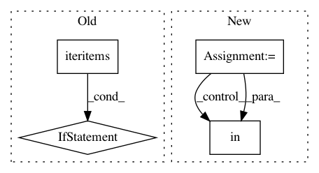

bf9599809214cbc3082eb7f39c0ad3155822a2c5,src/python/twitter/pants/tasks/jvm_compile/scala/zinc_analysis.py,ZincAnalysis,split,#ZincAnalysis#Any#Any#,172
Before Change
for naive_internal_apis, external_apis, split in \
zip(naive_internal_api_splits, naive_external_api_splits, splits):
internal_apis = defaultdict(list)
for k, vs in naive_internal_apis.iteritems():
if k in split:
internal_apis[k] = vs // Remains internal.
else:
external_apis[representatives[k]] = vs // Externalized.
internal_api_splits.append(internal_apis)
external_api_splits.append(external_apis)
apis_splits = []
After Change
external_api_splits = self._split_dict(self.apis.external, representative_splits)
// All externalized deps require a copy of the relevant api.
for external, external_api in zip(external_splits, external_api_splits):
for vs in external.values():
for v in vs:
if v in representative_to_internal_api:
external_api[v] = representative_to_internal_api[v]
apis_splits = []
for args in zip(internal_api_splits, external_api_splits):
apis_splits.append(APIs(args))
In pattern: SUPERPATTERN
Frequency: 3
Non-data size: 4
Instances
Project Name: pantsbuild/pants
Commit Name: bf9599809214cbc3082eb7f39c0ad3155822a2c5
Time: 2014-02-12
Author: benjy@foursquare.com
File Name: src/python/twitter/pants/tasks/jvm_compile/scala/zinc_analysis.py
Class Name: ZincAnalysis
Method Name: split
Project Name: tensorflow/tensorboard
Commit Name: 6b0b3e0b6e68637c4f8810259864c1256e9fbf38
Time: 2020-12-14
Author: wchargin@gmail.com
File Name: tensorboard/plugins/graph/graphs_plugin.py
Class Name: GraphsPlugin
Method Name: info_impl
Project Name: nilmtk/nilmtk
Commit Name: 63ef8bfa3b63090437bd27bf1e04db7ae1eae3cf
Time: 2014-11-27
Author: jack-list@xlk.org.uk
File Name: nilmtk/stats/totalenergy.py
Class Name:
Method Name: get_total_energy